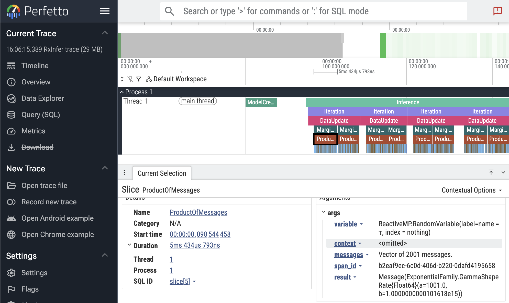

Trace callbacks
RxInfer provides a built-in callback structure called RxInferTraceCallbacks for recording all callback events during the inference procedure. Each event is stored as a TracedEvent containing the event name (as a Symbol) and the event object itself. This is useful for debugging, understanding the inference flow, and inspecting what happens at each stage. For general information about the callbacks system, see Callbacks.
Basic usage
using RxInfer
@model function iid_normal(y)
μ ~ Normal(mean = 0.0, variance = 100.0)
γ ~ Gamma(shape = 1.0, rate = 1.0)
y .~ Normal(mean = μ, precision = γ)
end
init = @initialization begin
q(μ) = vague(NormalMeanVariance)
end
# Create a trace callbacks instance
trace = RxInferTraceCallbacks()
result = infer(
model = iid_normal(),
data = (y = randn(10),),
constraints = MeanField(),
iterations = 3,
initialization = init,
callbacks = trace,
)
events = RxInfer.tracedevents(trace)
println("Recorded $(length(events)) events")
for i in 1:10
println(" ", events[i])
end
println("...")Recorded 302 events
TracedEvent(:before_model_creation)
TracedEvent(:after_model_creation)
TracedEvent(:before_inference)
TracedEvent(:before_iteration)
TracedEvent(:before_data_update)
TracedEvent(:before_marginal_computation)
TracedEvent(:before_product_of_messages)
TracedEvent(:before_message_rule_call)
TracedEvent(:after_message_rule_call)
TracedEvent(:before_message_rule_call)
...Using trace = true
Instead of creating a RxInferTraceCallbacks instance manually, you can use the trace = true keyword argument in the infer function. This automatically merges a RxInferTraceCallbacks instance with any user-provided callbacks and saves it to the model's metadata:
result = infer(
model = iid_normal(),
data = (y = randn(10),),
constraints = MeanField(),
iterations = 3,
initialization = init,
trace = true,
)
trace = result.model.metadata[:trace]
events = RxInfer.tracedevents(trace)
println("Recorded $(length(events)) events via trace = true")Recorded 302 events via trace = trueAccessing from model metadata
After model creation, the trace callbacks instance is automatically saved into the model's metadata under the :trace key. This makes it accessible from the inference result without needing to hold onto the callbacks object separately:
result = infer(
model = iid_normal(),
data = (y = randn(10),),
constraints = MeanField(),
iterations = 3,
initialization = init,
callbacks = RxInferTraceCallbacks(),
)
trace = result.model.metadata[:trace]
events = RxInfer.tracedevents(trace)
println("Recorded $(length(events)) events via trace = true")Recorded 302 events via trace = trueInspecting traced events
Each TracedEvent has a single field:
event::ReactiveMP.Event— the original event object that was passed to the callback
You can retrieve the event name via ReactiveMP.event_name(typeof(traced_event.event)) and access event-specific fields directly on traced_event.event.
using RxInfer.ReactiveMP: event_name
events = RxInfer.tracedevents(trace)
# Filter for specific events
iteration_events = filter(e -> event_name(typeof(e.event)) === :before_iteration, events)
println("Number of iterations: ", length(iteration_events))Number of iterations: 3Combining with other callbacks
trace = true is compatible with other callbacks, including benchmark = true and custom callbacks:
result = infer(
model = iid_normal(),
data = (y = randn(10),),
constraints = MeanField(),
iterations = 3,
initialization = init,
trace = true,
benchmark = true,
)
println("Trace included: ", haskey(result.model.metadata, :trace))
println("Benchmark included: ", haskey(result.model.metadata, :benchmark))Trace included: true
Benchmark included: trueViewing traces in Perfetto
A recorded trace can be inspected interactively with the Perfetto trace viewer. Use perfetto_view to embed the viewer inside a Pluto, VS Code or Jupyter notebook cell, or perfetto_open to open it in your default browser.
Inside Perfetto, you can navigate (zoom and pan) using the WASD keys. You can select with the mouse, and inspect individual events. Press ? for a quick help menu.
result = infer(model = iid_normal(), data = (y = randn(10),), iterations = 3, trace = true)
traces = RxInfer.tracedevents(result.model.metadata[:trace])
perfetto_view(traces) # show directly in your IDE (Pluto, VS Code, Jupyter)
perfetto_open(traces) # open in the browser
In the screenshot above, the first ProductOfMessages event is selected, showing the event details in the bottom panel. Here you see the duration (5ms), and the event arguments, including the result distribution.
If you are interested in debugging the performance of your inference call, take note that runtimes can vary greatly between runs due to Julia features like GC and JIT compilation. Try running your inference multiple times to get a better picture. You can also try to use Julia's built-in profiler.
The Perfetto functionality is still experimental, and we would value your feedback! Let us know if you encounter any issues or have suggestions for improvement.
RxInfer.perfetto_view — Function
perfetto_view(traces::Vector{TracedEvent}; name = "$(Time(now())) RxInfer trace")Converts a vector of TracedEvents to an embedded Perfetto trace viewer. Returns a PerfettoDisplay that renders as an interactive trace when displayed in a Pluto, VS Code or Jupyter notebook cell.
See also: perfetto_open, RxInferTraceCallbacks.
Example
result = infer(model = my_model(), data = my_data, trace = true)
traces = RxInfer.tracedevents(result.model.metadata[:trace])
perfetto_view(traces) # display in a notebook cellPluto tip: combine this with PlutoUI.WideCell for a bigger view, so `perfettoview(traces) |> WideCell`._
RxInfer.perfetto_open — Function
perfetto_open(traces::Vector{TracedEvent}; name = "$(Time(now())) RxInfer trace")Converts a vector of TracedEvents to Perfetto JSON and opens the result in your default web browser using the Perfetto trace viewer.
Returns the path to the temporary HTML file that was opened.
See also: perfetto_view, RxInferTraceCallbacks.
Example
result = infer(model = my_model(), data = my_data, trace = true)
traces = RxInfer.tracedevents(result.model.metadata[:trace])
perfetto_open(traces)RxInfer.PerfettoDisplay — Type
PerfettoDisplayReturned by perfetto_view. Renders as an embedded Perfetto trace viewer when displayed in a Pluto, VS Code or Jupyter notebook cell.
Exporting to TensorBoard
When TensorBoardLogger.jl is loaded, the TensorBoardLoggerExt extension activates and provides RxInfer.convert_to_tensorboard, which converts a recorded trace into TensorFlow event files readable by TensorBoard.
using RxInfer
using TensorBoardLogger # activates the extension
result = infer(
model = iid_normal(),
data = (y = randn(10),),
constraints = MeanField(),
iterations = 5,
initialization = init,
trace = true,
)
trace = result.model.metadata[:trace]
log_dir = RxInfer.convert_to_tensorboard(trace; log_distributions = true)
# Then run: tensorboard --logdir="<log_dir>"What gets logged
| Output | TensorBoard tab | Condition |
|---|---|---|
Per-iteration wall-clock duration (iteration_time_ms) | Scalars | always |
| Parameterisation-aware scalar tags for each posterior (see table below) | Scalars | log_posteriors admits the variable (see Filtering posteriors) |
Per-iteration histogram of posterior samples (posteriors/<var>/distribution) | Distributions / Histograms | log_distributions = true and log_posteriors admits the variable |
EventCounts per-event-type table | Text | always |
Summary run-timing rollup (see Run summary) | Text | always |
Per-event narrative breadcrumbs (Events, before_iteration, …) | Text | log_text_events = true |
Posterior scalar tags by family
Each posterior is logged under posteriors/<variable>/<tag> with one step per inference iteration. Specific dispatch is selected by the marginal's distribution type — the most-specific method wins, with the generic mean/var fallback catching anything not listed.
| Distribution family | Emitted tags |
|---|---|
Normal (any of the UnivariateNormalDistributionsFamily aliases) | mean, precision |
Gamma (any of the GammaDistributionsFamily aliases) | shape, rate |
Beta | alpha, beta, mean |
Bernoulli | succprob |
Binomial | ntrials, succprob |
InverseGamma (a.k.a. GammaInverse) | shape, scale |
Poisson | rate |
Geometric | succprob |
NegativeBinomial | r, succprob |
Exponential | rate |
VonMises | location, concentration |
Weibull | shape, scale |
LogNormal | meanlog, stdlog |
Erlang | shape, scale |
Laplace | location, scale |
Pareto | shape, scale |
Rayleigh | scale |
Chisq | dof |
any other UnivariateDistribution (fallback) | mean, var |
Marginals that are not univariate (e.g. multivariate Normal, matrix-variate posteriors) are silently skipped on the scalar path and produce no posteriors/... scalar tags. The histogram path is also gated on <: UnivariateDistribution, so the same families above are the ones that contribute to the Distributions / Histograms tabs when log_distributions = true.
Run summary
The Summary text tag is a one-shot snapshot of the run, written at step 1 alongside EventCounts. Each row is a key: value line; rows whose underlying measurement is missing (no matching Before*/After* event seen, or no iteration durations recorded) are silently skipped, so partial runs still produce a useful table instead of zero-valued placeholders.
| Row | Meaning | Source |
|---|---|---|
model_build | Wall-clock between BeforeModelCreationEvent and AfterModelCreationEvent. | Paired event timestamps. |
inference | Wall-clock between BeforeInferenceEvent and AfterInferenceEvent. | Paired event timestamps. |
total_wall | First-to-last traced event timestamp — covers the whole infer call, including any time before model creation or after inference. | First and last TracedEvent.time_ns. |
n_iterations | Number of paired iteration spans observed. | Length of the per-iteration duration map. |
iter_total, iter_mean, iter_min, iter_max | Aggregates over per-iteration wall-clock durations (sum, mean, min, max). | Same per-iteration durations that drive the iteration_time_ms scalar. |
Summary complements rather than replaces existing outputs: per-iteration durations remain in the iteration_time_ms scalar series, and the per-event-type breakdown stays in EventCounts. The Summary tag is always emitted for any trace that contains at least one event — it is not gated by log_text_events, log_posteriors, or log_distributions.
Filtering posteriors
The log_posteriors keyword controls which marginals reach the posteriors/<var>/* tags. It is independent of log_distributions, which controls what is emitted (scalars only vs. scalars + per-iteration histogram). Think of log_posteriors as the row filter and log_distributions as the column filter.
log_posteriors value | Effect |
|---|---|
true (default) | Log every marginal the model produces. |
false | Suppress every posteriors/* tag (both scalars and histograms). Iteration timing, event counts, and event-text breadcrumbs are unaffected. |
Vector{String} or Vector{Symbol} | Log only marginals whose name appears in the list. Both ["μ", "θ"] and [:μ, :θ] are accepted. An empty list behaves like false. |
trace = result.model.metadata[:trace]
# Log only μ (the τ posterior is skipped on both scalar and histogram paths).
RxInfer.convert_to_tensorboard(
trace;
log_posteriors = ["μ"],
log_distributions = true,
)
# Suppress every posterior tag while keeping iteration timing visible.
RxInfer.convert_to_tensorboard(trace; log_posteriors = false)When log_posteriors is an allow-list, the per-event text breadcrumb under on_marginal_update/<var> (gated by log_text_events) still fires for every variable — so you can keep visibility on which marginals updated without paying the scalar/histogram cost.
RxInfer.convert_to_tensorboard — Function
convert_to_tensorboard(trace::RxInferTraceCallbacks; output_file::Union{String, Nothing} = nothing,
log_distributions::Bool = false, log_text_events::Bool = false,
n_samples::Int = 1024, verbose::Bool = true)Convert trace events from inference to proper TensorFlow event files. Note that this function will not work unless TensorBoardLogger.jl is loaded in the present Julia session.
Arguments
trace::RxInferTraceCallbacks: The trace callbacks object from inference resultsoutput_file::Union{String, Nothing}: Optional directory path to write TensorBoard event logs. If not provided, writes totensorboard_logs/in the current working directory.log_distributions::Bool: Whentrue, log each univariate Normal and Gamma posterior as a per-iterationHistogramSummaryso TensorBoard's Distributions tab renders a percentile-band view of the posterior across iterations. The same tag also appears in the Histograms tab as an offset ridgeline. Defaults tofalse.log_text_events::Bool: Whentrue, emit a per-event text breadcrumb (e.g.before_iteration,after_marginal_computation, and theEventsstep timeline) into the Text tab. TheEventCountssummary is always written regardless of this flag. Scalar and histogram outputs are unaffected. Defaults tofalse.n_samples::Int: Number of samples drawn from each posterior to build the per-iteration histogram whenlog_distributions=true. Defaults to 1024.verbose: Whether to print useful information during export or not, defaults totrue
Returns
String: Path to the directory containing the TensorBoard event log files
Description
This function processes all traced events and creates proper TensorFlow event files using TensorBoardLogger, which can be directly imported and visualized in TensorBoard. Outputs include:
- Text summaries with event type information and counts
- Scalar time-series for univariate Normal (
mean,precision) and Gamma (shape,rate) posteriors - Scalar time-series for per-iteration wall-clock duration (
iteration_time_ms) - When
log_distributions=true: per-iterationHistogramSummaryunderposteriors/<var>/distribution, rendered primarily in TensorBoard's Distributions tab
The output directory can be directly opened in TensorBoard's web interface for visualization and analysis.
Example
results = infer(
model = my_model(),
data = my_data,
trace = true
)
trace = results.model.metadata[:trace]
# Create TensorBoard logs (writes to tensorboard_logs/ in the current directory)
log_dir = convert_to_tensorboard(trace; log_distributions = true)
# Then run: tensorboard --logdir=$log_dirAPI Reference
RxInfer.RxInferTraceCallbacks — Type
RxInferTraceCallbacks()A callback structure that records (optionally filtered) callback events during the inference procedure. Each event is stored as a TracedEvent wrapping the original event object.
When constructed with no arguments (or trace = true), all events are recorded. When constructed with a tuple of Symbols, only events whose names are in that tuple are recorded.
After model creation, the trace callbacks instance is automatically saved into the model's metadata under the :trace key (i.e., model.metadata[:trace]), making it accessible from the inference result via result.model.metadata[:trace].
Use RxInfer.tracedevents(callbacks) to retrieve the vector of traced events.
Example
# Create a trace callbacks instance that records all events
trace = RxInferTraceCallbacks()
# Or record only specific events
trace = RxInferTraceCallbacks((:before_iteration, :after_iteration))
result = infer(
model = my_model(),
data = my_data,
callbacks = trace,
)
# Access the traced events
events = RxInfer.tracedevents(trace)
for event in events
println(event_name(event.event))
end
# Or access via model metadata
result.model.metadata[:trace] === trace # trueRxInfer.TracedEvent — Type
TracedEventA single traced event recorded by RxInferTraceCallbacks. Wraps the original event object (a subtype of ReactiveMP.Event).
Fields
event::ReactiveMP.Event: the event object that was passed to the callbacktime_ns::UInt64: the timestamp of the event in nanoseconds, usestime_ns()function from Julia
Use ReactiveMP.event_name(traced_event.event) to retrieve the event name as a Symbol.
RxInfer.tracedevents — Function
tracedevents(callbacks::RxInferTraceCallbacks)Returns the vector of TracedEvent recorded by the trace callbacks.
See also: RxInferTraceCallbacks.
tracedevents(event::Symbol, callbacks::RxInferTraceCallbacks)Returns the vector of TracedEvent recorded by the trace callbacks filtered by event.
See also: RxInferTraceCallbacks.
RxInfer.is_trace_event_included — Function
is_trace_event_included(callbacks::RxInferTraceCallbacks, event_name::Symbol)Checks whether the specified event is not filtered and should be traced.
julia> callbacks = RxInfer.RxInferTraceCallbacks((:event1, :event2));
julia> RxInfer.is_trace_event_included(callbacks, :event1)
true
julia> RxInfer.is_trace_event_included(callbacks, :event2)
true
julia> RxInfer.is_trace_event_included(callbacks, :event3)
false